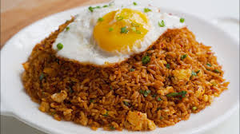

Spicy fried rice is a quick and flavorful dish that transforms simple ingredients into a bold and satisfying meal. Using day-old rice gives it the perfect texture, while soy sauce and sriracha bring a rich umami flavor with a spicy kick.
This dish is great for using leftovers and can be easily customized with your favorite vegetables or proteins. It’s perfect for busy days when you need something fast, filling, and packed with flavor.